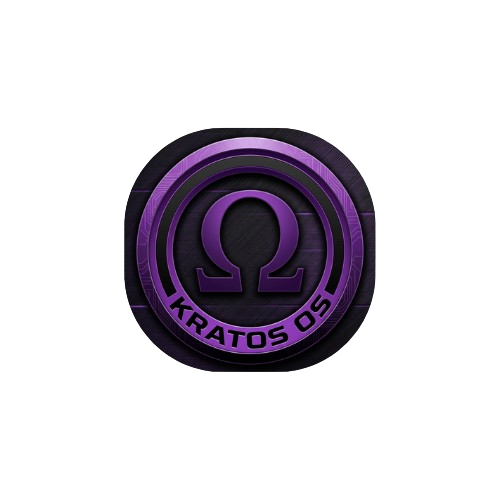

Talk to the project team
For project questions, contributor interest or release feedback, send us an email and we will get back to you.
hello@kratos-os.org
KRATOS/OSSay hello
Kratos OS is growing in the open. Questions, ideas and early feedback are welcome.
For project questions, contributor interest or release feedback, send us an email and we will get back to you.
hello@kratos-os.org